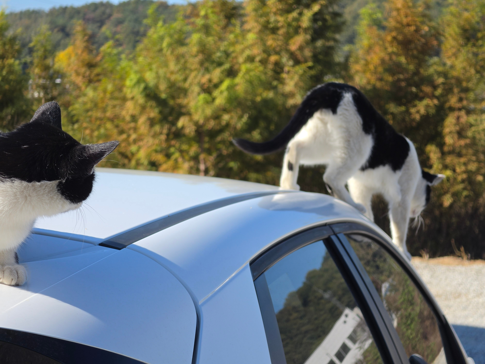
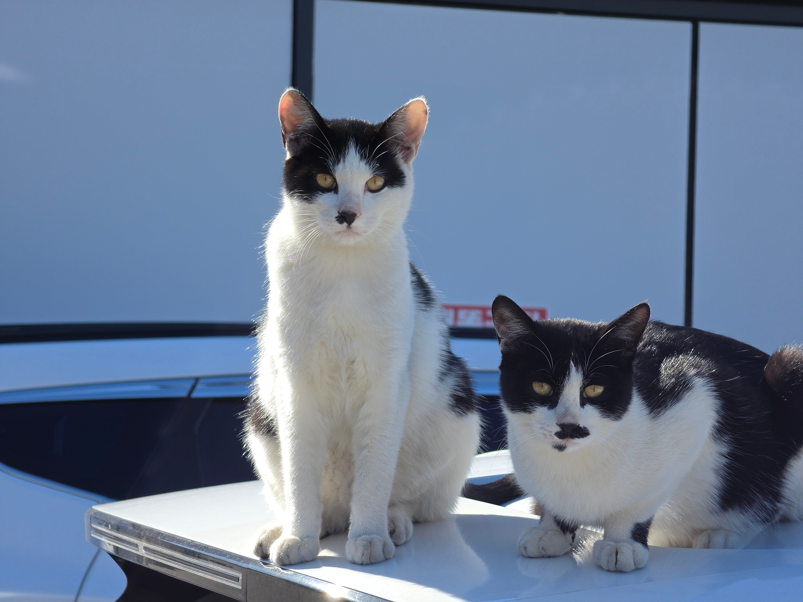
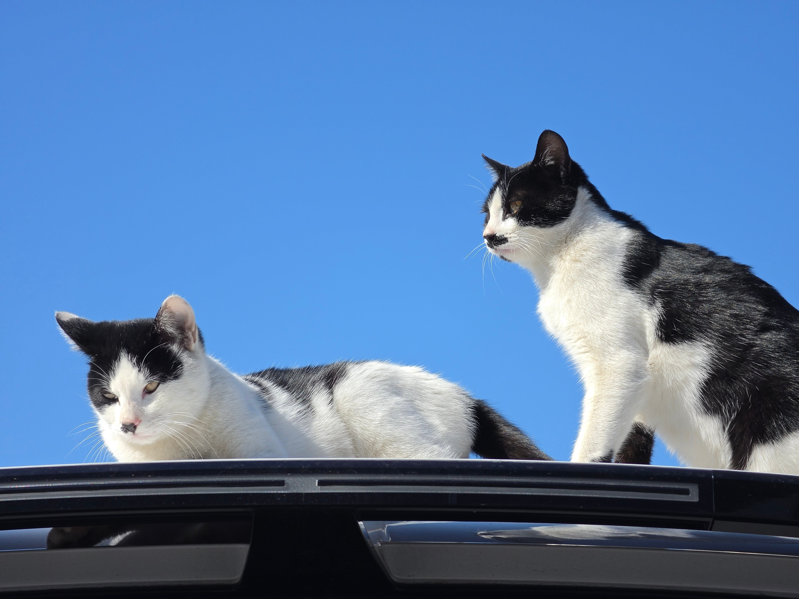
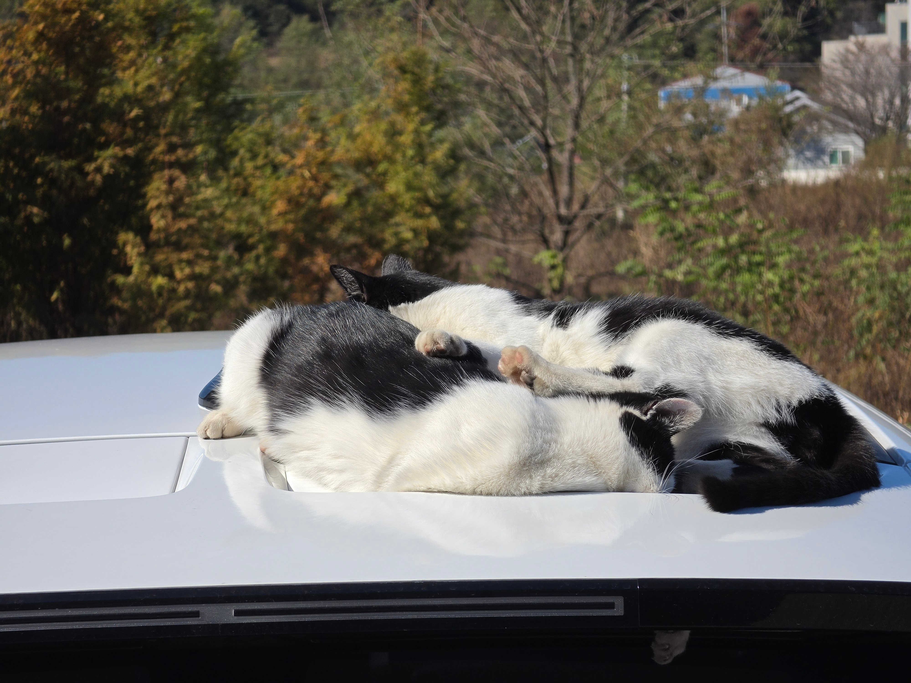
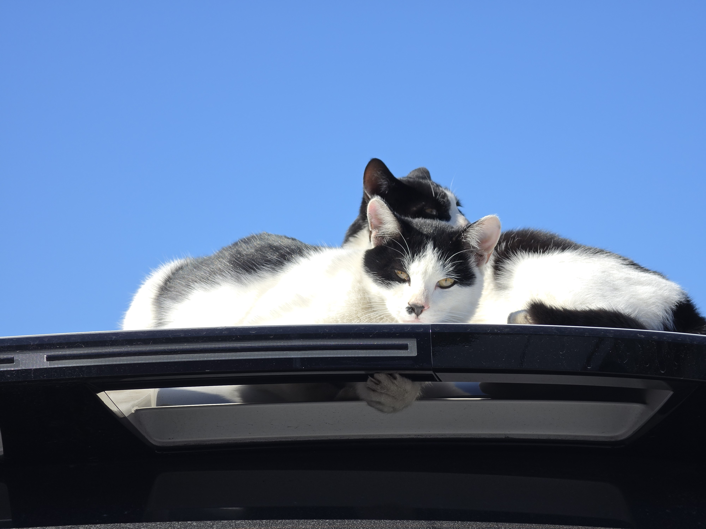
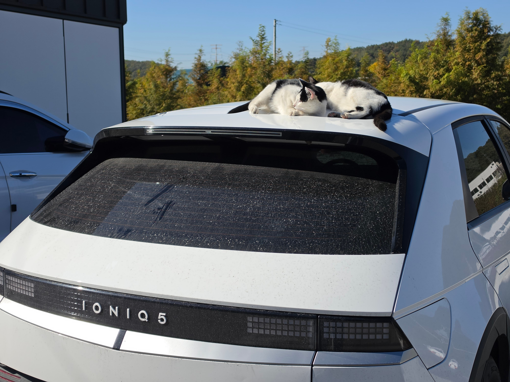

시발련들아






시발련들아
생강사오지마세요 빼면 섭하지
고양이언어봤는데 생강은 시비거는게 아니라 되게 긴장했다는 뜻이라고하더라고
그럼 구해줘
으 차에 기스 열뻗쳐
ㅋㅋㅋㅋㅋㅋㅋ
세번째짤 구도가 대단하다
차에 올라간거 털바퀴들 털로 먼지라도 깨끗이 털고 가라고해 .... ㅋㅋ
모가지썰고싶네
내차였음 토치꺼냄
긁긁하면 바로 구워버려
바로 살처분
응급비상약 타이레놀을 꺼낼 수 밖에
발톱기스존나 나있음 ㅅㄱ....
롸우~~~~~닝거닝거닝거닝거 계속하고
짭짭짭도 해주고
오징어사와~~~계속 해줘라